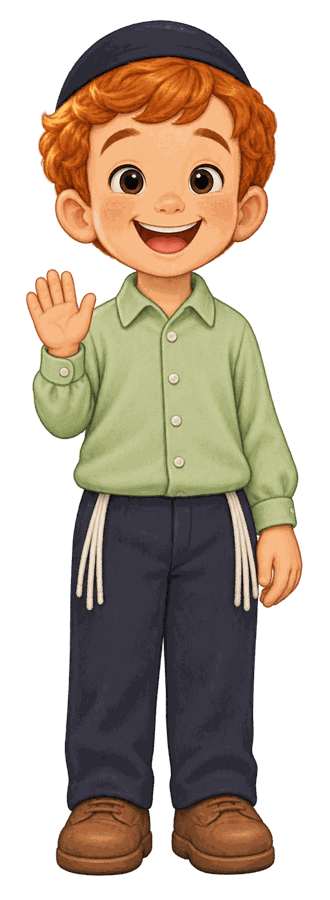

<!doctype html>
<html lang="en">
<head>
<meta charset="utf-8">
<meta name="viewport" content="width=device-width, initial-scale=1, viewport-fit=cover">
<title>Stories to Ten — Kindergarten Numbers</title>
<!-- Kindergarten Numbers, Unit 12 "Adding and taking away within 10": the UNIT OPENER, a short lesson at a calm 3D Shabbos table.
     Six cups on the table; three more are set: we do not count from one, we start at six and count on (seven, eight, nine): six plus three is nine.
     Nine candies; four are eaten: nine minus four is five (five in a row). The call-and-answer song "Start with six..." "count on!" (stand up).
     His turn: seven cups, two more are set; he shows how many on two hands. He taps the big arrow to go on. -->
<script type="importmap">{ "imports": { "three": "./lib/three.module.min.js" } }</script>
<link rel="stylesheet" href="frame.css"><link rel="stylesheet" href="unit5.css"><link rel="stylesheet" href="unit6.css"><link rel="stylesheet" href="hands-side.css">
<style>#go{ visibility:hidden; animation:pulse 1.2s infinite; } #go.on{ visibility:visible; } #hh[hidden], #check[hidden], .sent[hidden]{ display:none; }
.sent{ display:flex; align-items:center; gap:6px; background:#fff; border-radius:20px; padding:6px 12px; } .sent .n{ height:clamp(52px,8vh,68px); display:flex; } .sent .n svg{ height:100%; width:auto; }
.sent b{ font:900 clamp(30px,5vh,44px)/1 system-ui, sans-serif; color:#5A4A3A; } .sent b.plus{ color:#22B45E; } .sent b.minus{ color:#FF6A3D; }
@media (max-width:760px), (max-aspect-ratio:4/5){ .ui{ flex-wrap:wrap; width:min(100%,370px); } }</style>
</head>
<body>
<div id="world"></div>
<div id="game" class="locked"><div class="stage s6" id="stage">
  <div class="ui" id="panel">
    <div class="sent" id="sent" hidden></div>
    <div id="hh" hidden></div>
    <button id="check" class="bigbtn btn3d b-sun" aria-label="Check" hidden><svg viewBox="0 0 48 48"><path d="M10 25l9 9 19-20" stroke="#2B2350" stroke-width="7" fill="none" stroke-linecap="round" stroke-linejoin="round"/></svg></button>
    <button id="go" class="bigbtn btn3d b-green" aria-label="Go on"><svg viewBox="0 0 48 48"><path d="M8 24h28M26 12l12 12-12 12" stroke="#fff" stroke-width="7" fill="none" stroke-linecap="round" stroke-linejoin="round"/></svg></button>
  </div>
</div></div>
<script src="kit.js"></script><script src="frame.js"></script><script src="unit5.js"></script>
<script type="module">
import { mount } from './shabbos12.js';
const $ = id => document.getElementById(id);
let K, H, done, asking = false;
const band = () => [innerWidth < 760 ? 80 : 92, $('panel').getBoundingClientRect().top - 8];
function sent(a, op, b, c) { $('sent').hidden = false; $('sent').innerHTML = '<span class="n">' + U5.num(a) + '</span><b class="' + (op === '+' ? 'plus">+' : 'minus">−') + '</b><span class="n">' + U5.num(b) + '</span><b>=</b>' + (c == null ? '<b>?</b>' : '<span class="n">' + U5.num(c) + '</span>'); requestAnimationFrame(() => K.fit()); }
const SLIDES = [
  async F => { K.setCups(6, 3); await F.say('Shabbos! Six cups on the table.'); await F.say('Three more are set. Watch!');
    await F.say("Don't count from one. Start at six.", { noRepeat: true }); for (const n of [7, 8, 9]) { await K.setOne(); await F.say(F.Word(n) + '!', { noRepeat: true }); }
    sent(6, '+', 3, 9); await F.say('Six plus three is nine.'); },
  async F => { $('sent').hidden = true; K.setCandies(9); await F.say('Nine candies. Four are eaten. Yum!'); for (let j = 0; j < 4; j++) await K.eatOne();
    await F.say('Five are left. A full row is five.'); sent(9, '-', 4, 5); await F.say('Nine minus four is five.'); },
  async F => { $('sent').hidden = true; await F.say('A song! I start, you finish.'); await F.chant('Start with the big one...', true, 'count on!'); },
  async F => { K.setCups(7, 2); sent(7, '+', 2, null); await F.say('Your turn! Seven cups.'); await K.setOne(); await K.setOne(); await F.say('Two more are set.');
    asking = true; $('hh').hidden = $('check').hidden = false; $('go').hidden = true; requestAnimationFrame(() => K.fit());
    await F.say('How many cups now? Show me.', { repeat: 'Start at seven. Count on. Show me on two hands.' }); }
];
FR.game({
  id: 'u12-opener', title: 'Stories to Ten', rounds: SLIDES.length, stars: () => 3,
  hero: '<div class="hero6"></div>',
  endSay: () => "Great! Now let's hop and count on!",
  init() {
    K = mount($('world'), { band }); H = U5.hands(0, true); $('hh').appendChild(H.el);
    $('go').addEventListener('click', () => { if (GAME.phase !== 'answer' || asking) return; NK.sound.pop(); $('go').classList.remove('on'); GAME.phase = 'busy'; const d = done; done = null; d(true); });
    $('check').addEventListener('click', async () => { NK.unlock(); if (GAME.phase !== 'answer' || !asking) return; GAME.phase = 'busy'; H.lock(true);
      if (H.count() !== 9) { FR.oops($('check')); await FR.say("Let's look. Start at seven. Count on:"); const it = K.items().slice(7);
        await K.bumpAll(it, i => FR.say(FR.Word(8 + i) + (i === it.length - 1 ? '.' : ','), { noRepeat: true })); H.set(0); H.lock(false); await FR.say('Show me on two hands.'); GAME.phase = 'answer'; return; }
      asking = false; sent(7, '+', 2, 9); await FR.yes($('check'), 'Yes! Seven plus two is nine!'); const d = done; done = null; d(true); });
  },
  round: (F, i) => new Promise(async res => {
    GAME.phase = 'busy'; F.lock(true); $('go').classList.remove('on'); await SLIDES[i](F); done = res; GAME.phase = 'answer'; F.lock(false);
    if (asking) { H.lock(false); GAME.right = () => H.moves(9, '#hh').concat([{ tap: '#check' }]); GAME.wrong = () => H.moves(8, '#hh').concat([{ tap: '#check' }]); }
    else { GAME.right = () => [{ tap: '#go' }]; GAME.wrong = null; $('go').classList.add('on'); }
  })
});
</script>
</body>
</html>
